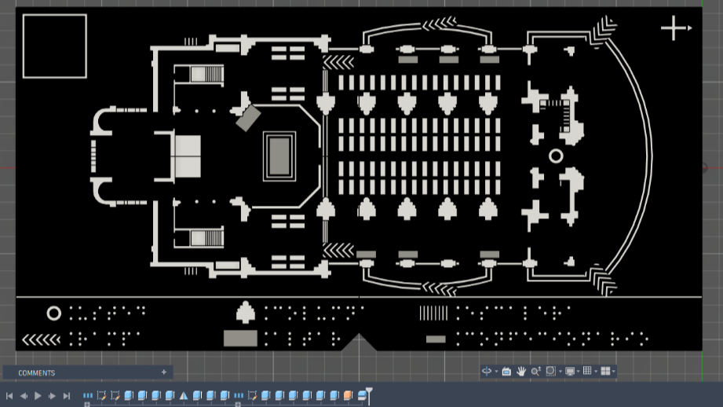
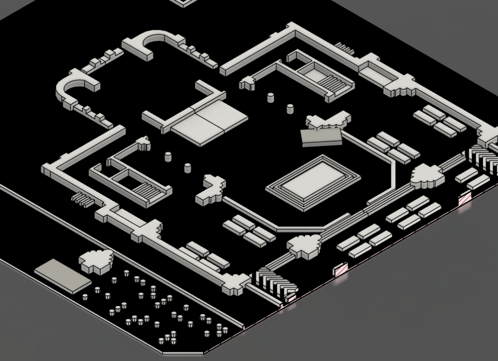

Modelos Hápticos y Accesibilidad Urbana

El Desafío
Facilitar la orientación espacial de personas con discapacidad visual en edificios e instituciones. El requerimiento principal consistió en diseñar una superficie táctil que permita identificar baños, aulas, oficinas y recorridos, resolviendo la restricción de orientación visual exclusivamente mediante el tacto.
Desarrollo CAD
Ante la falta de normativas estandarizadas en internet sobre dimensiones y relieves táctiles para planos, se desarrolló un sistema paramétrico propio en Fusion 360. Mediante iteraciones y pruebas directas con usuarios con ceguera, se estandarizó un sistema basado en una jerarquía de alturas y texturas específicas para diferenciar paredes, ventanas, caminos, rutas y calles. El diseño se optimizó desde el inicio previendo un ensamblaje modular.


Prototipado y Fabricación
Las superficies táctiles se fabrican mediante impresión 3D utilizando filamento PLA, material seleccionado por su viabilidad económica y amplia disponibilidad de colores (factor útil para usuarios con baja visión). Para la manufactura se utiliza una impresora de arquitectura cartesiana Creality Hi. Con el objetivo de reducir tiempos de máquina, minimizar el consumo de plástico y abaratar el costo del producto final, la estructura impresa se ensambla sobre una base de madera de 1mm, la cual provee la rigidez estructural necesaria.
Resultado y Uso
El dispositivo se provee en el ingreso de los edificios. Los usuarios exploran el plano de forma táctil para comprender la distribución arquitectónica, las proporciones y los límites físicos antes de recorrer el lugar. La implementación demostró resultados muy positivos, incrementando significativamente el nivel de autonomía de los usuarios para desplazarse por el entorno.